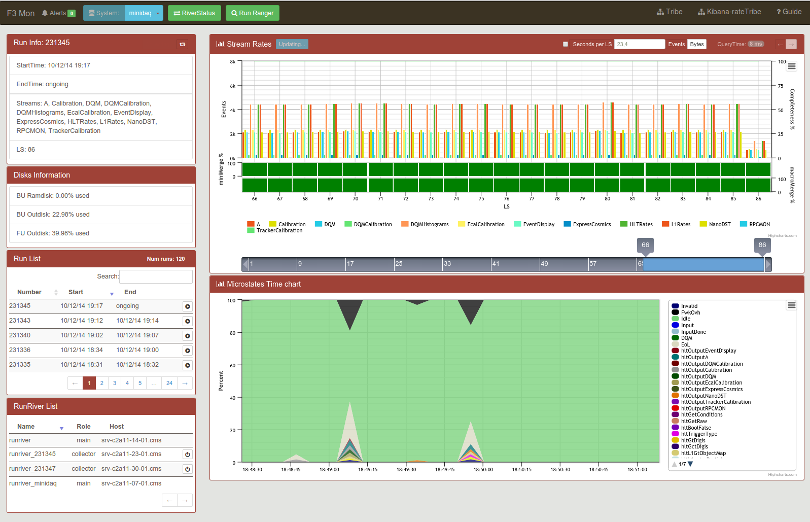
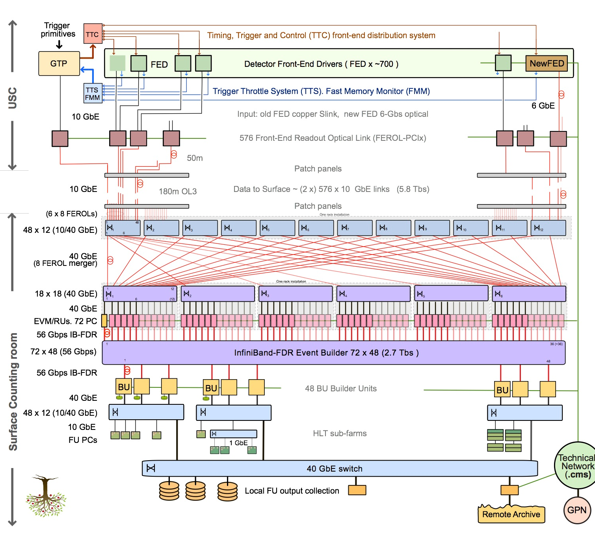
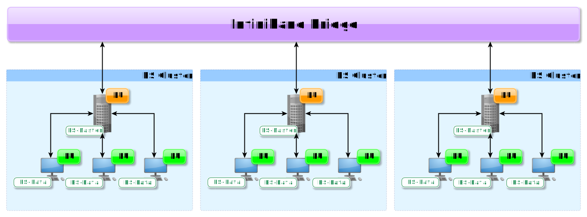
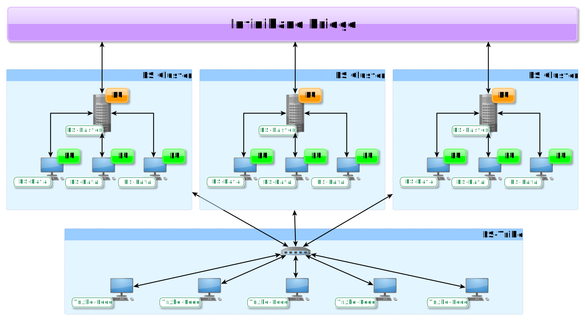
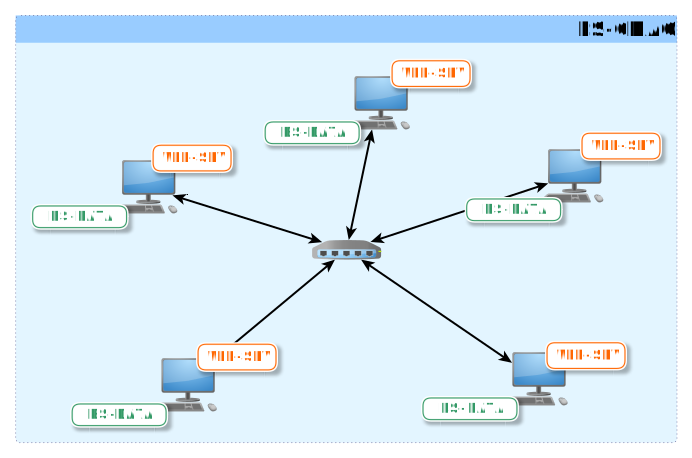
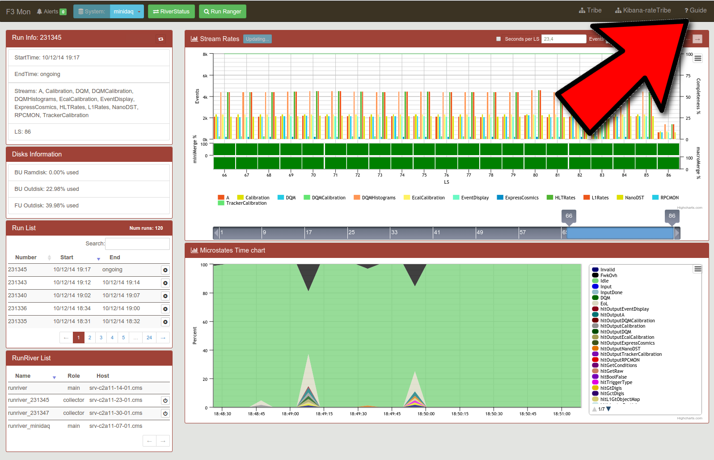

The F3 Monitor Page

CMS DAQ Upgrade (DAQ2)

The HLT sub-farms

The ES Tribe

The ES-CDAQ cluster

The F3 Monitor Page
The F3 Monitor Page

Use arrow keys to navigate (right/bottom to go ahead)